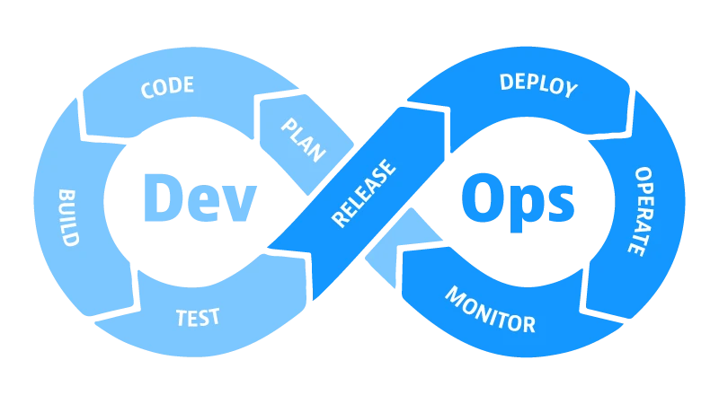
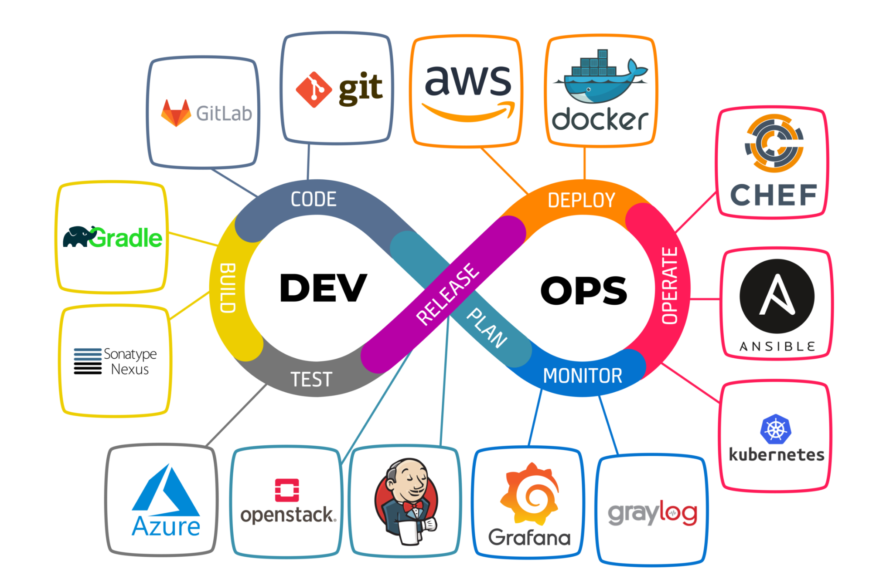
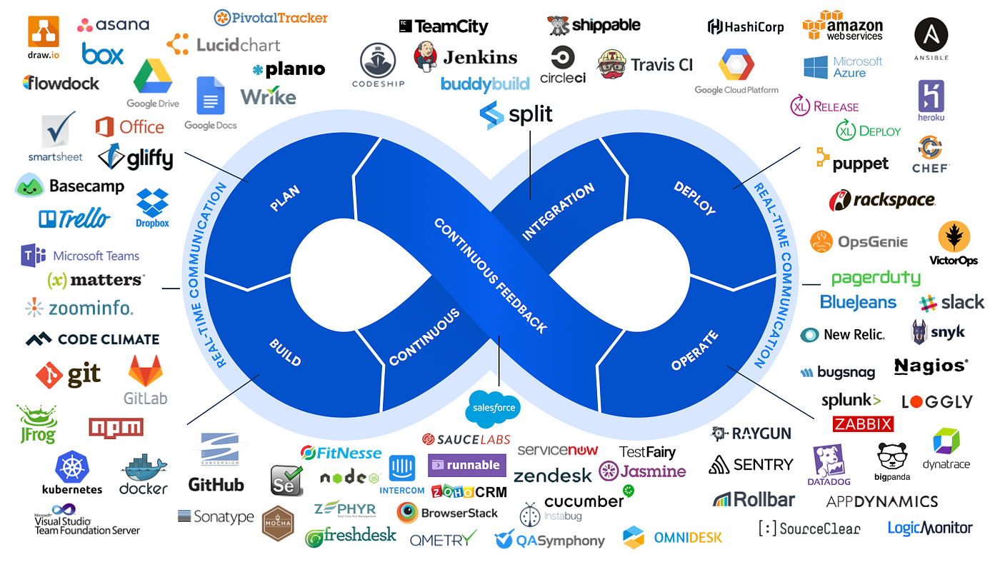

$ git status
On branch main
nothing to commit, working tree clean
$ git log --oneline
a13f92b Add project README
b7c11d0 Create starter page
ConceptsUnderstand the big picture
CommandsCopy, run, observe, explain
Version controlTrack and recover changes
PublishShare work on GitHub
Before we begin
Your learning roadmap
Follow the order below. Each skill supports the next one, so do not rush straight to GitHub without understanding your local files and Git history.
01Understand DevOps
Learn how development and operations collaborate to deliver software reliably.
02Become comfortable in a terminal
Navigate folders, inspect files, search text, understand environment variables and test connectivity.
03Use Git locally
Record meaningful snapshots, create branches, compare changes and recover safely.
04Collaborate through GitHub
Publish a repository, document it and understand how changes move between local and remote copies.
05Complete a real deliverable
Build a web page, track at least three changes, push it to GitHub and write a useful README.
What “professional” means here
It does not mean memorising commands. It means understanding where a command acts, checking the result, writing readable history, protecting work, and explaining your workflow to another developer.
Module 01
Introduction to DevOps
DevOps is a way of working that brings software development and IT operations together so teams can deliver changes faster, more safely and more consistently.
Real-life analogy
A restaurant that serves reliably
Chefs create a dish (development), the kitchen team prepares the station and equipment (operations), quality checks verify the dish, and customer feedback improves the next version. If these groups never communicate, orders are late and mistakes increase. DevOps connects the whole process.
Development vs Operations vs DevOps
Area
Main concern
Example
Development (Dev)
Build features and fix defects
Adding a login page
Operations (Ops)
Run, monitor and maintain the service
Keeping the application available
DevOps
Shared ownership, automation and feedback across delivery
Automatically test a change and deploy it through a controlled pipeline
Why teams adopt DevOps
Shorter feedback loops
Find problems closer to the moment they were introduced.
More reliable releases
Use repeatable tests and deployment steps instead of relying on memory.
Shared responsibility
Teams collaborate rather than throwing work over a wall.
Continuous improvement
Monitoring and user feedback inform the next change.
DevOps is not just a tool
Installing Git, Docker or a CI server does not automatically create DevOps. Tools support the work, but culture, clear processes, useful automation, measurable outcomes and learning from incidents matter just as much.
Important distinction
DevOps is not the same as “developers do operations” or “operations disappear.” It is a collaborative approach with shared goals and clear ownership.
Module 02
The DevOps lifecycle and culture
The lifecycle is a repeating loop, not a one-time waterfall. Teams plan, build, test, release, deploy, operate, monitor and use what they learn to improve the next iteration.
Collaboration: developers, testers, security and operations discuss risks early.
Automation: repeatable tasks are scripted to reduce manual errors.
Small batches: ship smaller changes that are easier to understand and roll back.
Shared ownership: the team cares about how software behaves after release.
Blameless learning: investigate why a failure occurred and improve the system instead of only blaming a person.
Measurement: track delivery speed, change failure rate, recovery time and service reliability.
Security from the start: protect secrets, review dependencies and include security checks early.
Common DevOps tools by purpose
Purpose
Examples
What the category does
Version control
Git, GitHub
Tracks source changes and supports collaboration.
CI/CD
GitHub Actions, Jenkins, GitLab CI/CD
Runs checks and delivery steps automatically.
Containers
Docker
Packages an application with its runtime dependencies.
Orchestration
Kubernetes
Coordinates containerised workloads across machines.
Infrastructure as Code
Terraform, Ansible
Defines or configures infrastructure through repeatable files and automation.
Observability
Prometheus, Grafana, OpenTelemetry
Helps teams understand system health through metrics, dashboards, traces and logs.
Module 03
Automation, CI, Continuous Delivery and Deployment
Automation means a repeatable task is performed by a script or tool with minimal manual effort. Examples include running tests, checking formatting, creating a build, packaging files, scanning dependencies and deploying an approved release.
CommitDeveloper pushes code
CI checksLint, test, build
PackageVersioned artifact
DeployStaging or production
Continuous Integration (CI)
Developers integrate small changes into a shared branch frequently. Each change triggers automated checks such as unit tests, linting and a build. CI aims to discover integration problems early.
Example: a developer pushes a change to a website. GitHub Actions runs a workflow that checks whether required files exist and whether the project passes its tests. A failed check gives the team a signal to fix the issue before merging.
Continuous Delivery
Every accepted change is built, tested and kept in a release-ready state. Production deployment may still require a human approval or scheduled release decision.
Continuous Deployment
Every change that passes the required automated pipeline is automatically released to production, without a separate manual release approval. This requires strong tests, monitoring, security controls and a safe recovery strategy.
Term
Automated checks?
Production release
CI
Yes—integrate and validate changes
Not implied by CI alone
Continuous Delivery
Yes—pipeline keeps changes release-ready
Often requires a person to approve the release
Continuous Deployment
Yes—passing changes flow through the pipeline
Automatically deployed to production
Remember it this way
CI asks, “Does this change integrate and pass checks?” Continuous Delivery asks, “Could we release it safely now?” Continuous Deployment says, “If it passes the required controls, release it automatically.”
Beginner-safe automation checklist
Run the same checks locally and in the pipeline where practical.
Never store passwords, API keys or tokens in source code or public repositories.
Keep build and test steps repeatable; document required versions and commands.
Use a staging environment for realistic checks when available.
Monitor releases and prepare a rollback or forward-fix plan.
Module 04
Linux and Git Bash essentials
A shell is a text-based interface where you type commands. Linux servers commonly provide a shell; Git Bash provides a Bash-like terminal on Windows. macOS also provides a Unix-style terminal. Commands can differ between shells and operating systems, so read errors and check your environment.
Safe command habit
Before deleting or overwriting files, run pwd and ls to confirm where you are. Practise destructive commands only in a test folder. Never run a command you do not understand with administrator privileges.
1. Navigation
CommandWhat it does
pwd # show current directory
ls # list files and folders
ls -la # include hidden files and details
cd projects # enter a folder named projects
cd .. # move up one directory
cd ~ # go to your home directory
cd - # return to the previous directory
Example: if pwd prints /home/megha and you run cd projects, the shell moves into /home/megha/projects if that folder exists.
2. File and directory operations
CommandWhat it does
mkdir devops-practice # create a directory
cd devops-practice
touch index.html # create an empty file (if supported)
cp index.html index-copy.html # copy a file
mv index-copy.html backup.html # rename/move a file
cat index.html # print file contents
less index.html # read a file page by page
file index.html # identify file type on many systems
rm backup.html # delete a file; usually no recycle bin
On Windows Git Bash, touch, cat, cp, mv and rm are usually available. On every platform, verify paths before changing or deleting anything.
3. Search for files and text
find . -name "*.html" # find HTML files under current folder
grep "DevOps" README.md # find matching text in a file
grep -n "DevOps" README.md # show matching line numbers
grep -Rni "TODO" . # search recursively, case-insensitive
history # show recent commands
clear # clear terminal display
. means “the current directory.” In find . -name "*.html", the quotation marks protect the wildcard from being expanded too early by the shell.
4. Environment variables
An environment variable is a named value available to a process. It can store configuration such as an environment name or a path to a tool. Do not place secrets in a public README or print them into logs.
echo "$HOME" # home directory in Bash
echo "$PATH" # folders searched for commands
export APP_ENV=development # set variable in this Bash session
echo "$APP_ENV" # print its value
unset APP_ENV # remove it from this session
These examples use Bash syntax. Windows Command Prompt and PowerShell use different syntax. A variable set this way is generally temporary for that shell session unless you configure it elsewhere.
5. Basic networking and diagnostics
ping example.com # test reachability (may be blocked)
curl -I https://example.com # request response headers
curl https://example.com # request page content
ip addr # show IP interfaces on many Linux systems
ip route # show routing table on many Linux systems
nslookup example.com # query DNS (if installed)
ssh user@server.example.com # connect to a server (with permission)
Interpretation: a failed ping does not prove a website is down; firewalls may block ping. curl -I returning an HTTP status such as 200, 301 or 404 tells you the server responded, but the meaning depends on the status code.
6. Exit codes and command chaining
echo $? # exit code of the previous command in Bash
mkdir output && cd output
command-one || echo "The previous command failed"
command-one ; command-two
&& runs the next command only if the previous command succeeds.
|| runs the next command if the previous command fails.
; runs the next command regardless of the previous command's result.
Exit code 0 conventionally means success; a non-zero code signals an error or other condition.
Terminal practice
Create a folder called devops-lab.
Inside it, create notes.txt and add a few lines using a text editor.
Use cat to display it and grep to search one word.
Use find to locate the file.
Run pwd and explain the path you see.
Module 05
Git: the foundation of version control
Git is a distributed version-control system. It records project history as commits, lets you experiment on branches, compare versions and collaborate without relying on a single shared folder.
Real-life analogy
Save points in a game
A commit is like a named save point. A branch is a separate path where you try an idea. You can compare paths, combine successful work, and return to an earlier state if you need to—provided you choose the appropriate recovery command.
Use an email address you are comfortable associating with commits. Git configuration identifies the author metadata; it is not your GitHub password. Never configure a password into your Git username or commit history.
2. Create or start a repository
mkdir my-first-webpage
cd my-first-webpage
git init
git status
git init creates a local Git repository in the current folder. git status tells you the current branch and which files are new, modified, staged or untracked.
3. Stage and commit changes
git status
git add index.html # stage one file
git add README.md # stage another file
git diff # unstaged changes
git diff --staged # changes staged for next commit
git commit -m "Create starter webpage"
git log --oneline # compact commit history
A commit should represent one understandable unit of work. Good messages describe the change, for example Add contact section to homepage. Avoid messages such as stuff, final or changes.
4. Branches: work without disturbing the main line
git branch # list local branches
git switch -c feature/about-section # create and switch to a branch
# edit index.html
git status
git add index.html
git commit -m "Add about section"
git switch main # return to main
A branch is a movable name pointing to a line of commits. Use a branch for a focused feature or fix. Before switching branches, check your working tree and understand what will happen to any uncommitted edits.
Merge brings the changes from one branch into the current branch. Git may create a merge commit or perform a fast-forward. If both branches changed the same lines incompatibly, Git can report a conflict that must be resolved manually.
6. Understand the most useful inspection commands
Command
Question it answers
git status
What has changed and what is staged?
git diff
What changed but is not staged?
git diff --staged
What exactly will the next commit include?
git log --oneline --graph --all
How does the commit history fit together?
git show HEAD
What did the latest commit record?
git blame index.html
Which commit last changed each line?
Module 06
Comparing, reverting and recovering changes
Recovery commands are powerful. First inspect the repository with git status, then select the command that matches the state of the work. If the changes matter, make a backup before attempting recovery.
Common recovery choices
Situation
Command
Effect / caution
Unstage a file but keep edits
git restore --staged index.html
Removes it from staging; edits remain in the working tree.
Discard unstaged edits to one tracked file
git restore index.html
Overwrites those edits with the index version. Uncommitted work can be lost.
Create a new commit that reverses a prior commit
git revert COMMIT_ID
Usually the safer public-history choice because it preserves history.
Move current branch pointer to an older commit
git reset (options matter)
Can rewrite local history or discard changes. Learn the mode before using it.
Find recent HEAD positions
git reflog
Shows recent local reference movements and may help recover a commit.
Do not blindly run destructive commands
Avoid copying commands such as git reset --hard or git clean -fd from the internet without understanding them. They can permanently remove uncommitted work or untracked files. If a commit has already been shared, prefer discussing and using git revert rather than rewriting shared history.
Merge conflict: what it means
A conflict occurs when Git cannot safely decide how to combine competing edits. Git marks the affected file with conflict markers:
<<<<<<< HEAD
The version currently in this branch.
=======
The incoming version from the branch being merged.
>>>>>>> feature/about-section
Open the file, decide what the final content should be, remove the conflict markers, save it, and inspect the result. Then run git add filename and finish the merge with a commit if Git requires one. Do not leave markers in the final code.
Module 07
GitHub: remote repositories and collaboration
Git is the version-control tool. GitHub is a hosted platform that stores Git repositories and adds collaboration features such as pull requests, issue tracking, code review, access control and automation workflows.
Local and remote: how the pieces connect
Local repositoryFiles, branches, commits
push fetch / pull
GitHub repositoryRemote copy, collaboration, PRs
Key vocabulary
Remote: a named connection to another repository, commonly called origin.
Clone: download a repository and its history to your machine.
Push: send local commits to a remote repository.
Fetch: retrieve remote updates without automatically merging them into the current branch.
Pull: fetch remote updates and integrate them into the current branch, according to the configured strategy.
Fork: create your own GitHub-side copy of another user's repository, commonly used for open-source contributions.
Pull request (PR): propose changes so others can review, discuss and merge them.
README: the project introduction and usage guide, commonly written in Markdown.
.gitignore: lists intentionally untracked files Git should ignore, such as temporary files or local environment configuration.
Publish an existing local repository
Sign in to GitHub and create a new empty repository. If you already have a local README, avoid generating a second initial README on GitHub for this first push to keep the setup simple.
Copy the repository URL from GitHub. Use the URL shown for your own repository; do not type a guessed URL.
Connect the local repository and check the remote:
git remote add origin https://github.com/YOUR-USERNAME/YOUR-REPOSITORY.git
git remote -v
git branch -M main
git push -u origin main
Replace the example URL with your actual repository URL. HTTPS authentication may require a browser sign-in or credential manager; your GitHub account password is generally not accepted as a Git HTTPS password. Follow GitHub's current authentication guidance.
Clone a repository onto a new computer
git clone https://github.com/OWNER/REPOSITORY.git
cd REPOSITORY
git status
Daily collaboration workflow
1
Sync first Check the branch and pull relevant updates before starting.
2
Create a focused branch Use a descriptive name such as feature/contact-section.
3
Make small commits Inspect diffs, stage only related files and write clear commit messages.
4
Push the branch Share your commits on GitHub for review.
5
Open a pull request Explain the change, attach screenshots when useful, and respond to feedback.
6
Merge and clean up After approval and checks, merge according to team rules and remove obsolete branches.
Write a useful README
A README should help a new person understand the project without asking you basic questions. Include:
Project name and one-sentence purpose.
Features or pages.
Tools and technologies used.
Prerequisites and installation/setup instructions.
How to run or view the project.
Folder structure, screenshots and known limitations.
Contribution guidance and licence, if relevant.
Repository hygiene and security
Do not commit passwords, API keys, access tokens, private keys, database dumps or personal data.
Add local-only files to .gitignore, but remember: ignoring a file does not remove it if it is already tracked.
Use meaningful commit messages and keep pull requests focused.
Review the file list before pushing, especially when a repository is public.
Use branch protection and required checks for team repositories where appropriate.
Capstone lab
Hands-on activity: publish a web page to GitHub
Outcome: a GitHub repository containing a simple webpage, a meaningful commit history and a README that explains the project.
Definition of done
Your repository is accessible at the intended visibility level, contains index.html, README.md and .gitignore, has at least three purposeful commits, and the README explains how to view or run the page.
Step 1 — Create the project folder
mkdir mevi-devops-starter
cd mevi-devops-starter
git init
Step 2 — Create index.html
Create a file named index.html in the folder and paste this starter page. Open it in a browser by double-clicking the file, or use a local development server if your setup requires one.
git switch -c feature/contact-section
# Add a contact or resources section to index.html
git diff
git add index.html
git commit -m "Add resources section"
git switch main
git merge feature/contact-section
Step 6 — Add a README
Create README.md and document the project. You can use this starter outline:
README.md
# My DevOps Starter Project
A small webpage created while learning Linux, Git and GitHub.
## Features
- Responsive, simple HTML page
- Learning goals and resources
- Version history managed with Git
## Technologies
- HTML
- CSS
- Git
- GitHub
## How to view
1. Clone or download this repository.
2. Open `index.html` in a browser.
## What I practised
- Creating a local repository
- Staging and committing changes
- Creating and merging a branch
- Publishing the repository to GitHub
## Future improvements
- Add a separate CSS file
- Add accessibility checks
- Add automated validation with GitHub Actions
Step 7 — Add a simple .gitignore
Create a file named .gitignore. For this simple HTML project, it can be small:
.DS_Store
Thumbs.db
.vscode/
*.log
Do not ignore files the project needs. If you use a specific editor or tool, review which generated files are safe to exclude.
Step 8 — Commit documentation and inspect the final state
git status
git add README.md .gitignore
git diff --staged
git commit -m "Document project and ignore local files"
git log --oneline --graph --decorate
Step 9 — Create the remote repository and push
Create an empty repository on GitHub, choosing public or private visibility intentionally.
Copy its HTTPS or SSH URL.
Run the commands below with your real URL.
git remote add origin https://github.com/YOUR-USERNAME/mevi-devops-starter.git
git remote -v
git branch -M main
git push -u origin main
If origin already exists, do not add it a second time. Check with git remote -v and update the URL only if needed.
Step 10 — Verify your result
Field guide
Common errors and how to think through them
You are probably outside the project folder, or the folder has not been initialised. Run pwd, ls -la, move into the correct folder with cd, and check git status. Do not run git init in a random parent folder.
Git does not see a tracked-file change or staged new file. Save the file in your editor, check that you edited the correct project copy, and run git status. If the file is new, stage it with git add filename.
The remote has commits your local branch does not contain. Inspect git status and git log, then integrate the remote history using an appropriate pull/rebase/merge workflow. Avoid force-pushing as a first response, especially on a shared branch.
A remote named origin is already configured. Run git remote -v to inspect it. If it points to the wrong repository, use git remote set-url origin YOUR-REPOSITORY-URL after verifying the correct URL.
Configure commit author information with git config --global user.name "Your Name" and git config --global user.email "you@example.com". Then retry the commit.
Run git status to list conflicted files. Open each file, choose the correct final content, remove conflict markers, test the result, stage the resolved files and complete the merge. If you are unsure, stop and make a backup before proceeding.
Complete roadmap • Beginner to production
DevOps Roadmap: 10 Steps Explained in Detail
These notes expand the topics in your reference images into a practical learning sequence. Follow each step in order: understand the terms, practise the commands in a safe environment, then connect the step to the next stage of delivery.
How to study each step
Read the definition → understand the workflow → try the example → check the result → complete the practice task. Tools are examples, not mandatory choices; select tools that fit the project and team.
DevOps at a glance
The loop below represents continuous collaboration: plan, code, build, test, release, deploy, operate and monitor. Feedback from production informs the next plan.


Tools across the DevOps lifecycle

Examples of tools mapped to stages
STEP 01
Linux Fundamentals and Bash
Goal: comfortably navigate a machine, inspect files, run programs and understand basic permissions. Linux is widely used on servers and cloud virtual machines. Bash is a command-line shell that reads and executes commands.
Terminology explained
Terminal
The application window where you interact with a command-line shell.
Shell
The program that interprets commands, expands variables and starts processes. Bash is one shell; Zsh and PowerShell are others.
CLI
Command-line interface: interaction by typing commands rather than clicking graphical controls.
Path
The address of a file or directory. An absolute path begins at the filesystem root; a relative path is interpreted from the current directory.
Process
A running instance of a program with a process ID (PID).
Permission
Rules controlling who can read, write or execute a file.
Package manager
A tool that installs, updates and removes software with dependency handling, such as apt on Debian/Ubuntu.
Sub-step A — inspect your location and files
pwd # print the current directory
ls # list visible files
ls -la # include hidden files and details
cd ~/projects # move to a directory (if it exists)
cd .. # move one level up
mkdir devops-lab # create a practice directory
cd devops-lab
Read the output:pwd tells you where relative paths will start. ls -la shows hidden entries such as .git. A name beginning with a dot is commonly hidden in Unix-like systems.
> replaces a file's contents; >> appends. Use them carefully. grep searches text, while find searches directory trees for matching paths.
Sub-step C — understand permissions and processes
ls -l script.sh
chmod u+x script.sh # give the owner execute permission
ps # show processes associated with this terminal
ps aux # detailed process list on many Linux systems
top # interactive process/resource view
In a permission string such as -rwxr-xr--, the first group is the owner, the second group is the group, and the last group is everyone else. Avoid using chmod 777 as a routine fix: it grants broad permissions.
sudo runs a command with elevated privileges. Only use it for a task that requires it and that you understand. Package commands vary by distribution: apt is common on Ubuntu/Debian; dnf is common on Fedora/RHEL-family systems.
Practice task: create a devops-lab folder, write a file, copy it, search for a word, inspect permissions and explain each command aloud.
STEP 02
Networking and Security Concepts
Goal: understand how a client reaches an application, how names resolve to addresses, and how to troubleshoot common connectivity problems.
Terminology explained
IP address
A numeric address used to identify an interface on an IP network. IPv4 looks like 192.0.2.10; IPv6 uses a longer hexadecimal form.
Subnet/CIDR
A way to describe a network range, such as 192.168.1.0/24. The prefix length indicates how many leading bits identify the network.
DNS
Domain Name System translates names such as example.com into records including IP addresses.
TCP
A connection-oriented transport protocol that provides ordered, reliable byte delivery.
UDP
A connectionless transport protocol with lower overhead but no built-in guarantee of delivery or ordering.
HTTP / HTTPS
HTTP is used for web communication. HTTPS protects HTTP traffic using TLS encryption and server identity validation.
SSH
Secure Shell supports encrypted remote login and secure command execution; it is also commonly used for Git authentication.
Port
A number that identifies a service endpoint on a host, for example 22 for SSH by convention and 443 for HTTPS by convention.
Firewall
A control that allows or blocks network traffic based on rules.
Proxy / Load balancer
A proxy forwards requests on behalf of a client or server. A load balancer distributes requests across multiple backend instances.
Sub-step A — trace a basic web request
You enter a domain name in the browser.
DNS resolution finds the destination address.
The client establishes the required transport connection.
For HTTPS, TLS negotiates encryption and validates the server certificate.
The browser sends an HTTP request to the service.
The server returns a response; logs and metrics help diagnose errors.
Sub-step B — test connectivity in a safe way
ping example.com
nslookup example.com
# or, where installed:
dig example.com
curl -I https://example.com
traceroute example.com
# macOS may use traceroute; Linux tools vary by distribution
ip addr
ip route
Interpretation: DNS lookup checks name resolution; curl -I requests response headers; ip route displays routing information. A failed ping alone does not prove a website is down because ICMP may be blocked.
Sub-step C — troubleshoot by layer
Name: does DNS resolve to the expected address?
Route: does the machine have a network route?
Port: is the service listening and is the port allowed through firewalls?
Protocol: is the client using HTTP vs HTTPS correctly?
Application: inspect response status, application logs and service health.
Security basics
Use HTTPS, least-privilege access, strong authentication, timely updates and restrictive firewall rules. Never scan systems you do not own or have explicit permission to test. Wireshark is a packet-analysis tool; capture only traffic you are authorised to inspect.
Practice task: resolve a public domain, inspect HTTPS response headers, identify the IP configuration on your own machine and write down which layer you would investigate for a DNS failure versus a connection timeout.
STEP 03
Scripting and Automation Languages
Goal: turn repeated manual work into repeatable, understandable scripts. Scripting is valuable for file operations, checks, data transformation, deployment steps and scheduled maintenance.
Terminology explained
Script
A text file containing instructions that a shell or interpreter executes.
Interpreter
A program that runs source code, such as the Python interpreter.
Variable
A named place to hold a value that can be reused.
Condition
A decision such as if that chooses which commands run.
Loop
A construct that repeats commands for a sequence or while a condition is true.
Exit code
A status number returned by a process; zero conventionally means success and non-zero commonly indicates failure.
Idempotency
A key automation property: repeating an operation should leave the system in the same intended state rather than creating duplicate or harmful effects.
Sub-step A — start with a Bash script
#!/usr/bin/env bash
set -euo pipefail
echo "Starting validation"
if [ -f "index.html" ]; then
echo "index.html exists"
else
echo "index.html is missing" >&2
exit 1
fi
echo "Validation completed"
Save as check-site.sh, then run chmod +x check-site.sh and ./check-site.sh. The shebang selects the interpreter. set -euo pipefail makes many common failures easier to catch, though scripts still need thoughtful error handling.
Sub-step B — automate with Python when logic grows
from pathlib import Path
required_files = ["index.html", "README.md"]
missing = [name for name in required_files if not Path(name).is_file()]
if missing:
print("Missing files:", ", ".join(missing))
raise SystemExit(1)
print("Project structure looks good.")
Python is readable and useful for cross-platform tasks, APIs, reports and data processing. Ruby and Go are also used in automation ecosystems. Choose based on the team, environment, dependencies and task rather than assuming one language is always best.
Sub-step C — make scripts operationally safe
Validate inputs before changing files or infrastructure.
Quote shell variables, for example "$FILE", to reduce word-splitting errors.
Log what the script is doing without printing secrets.
Return meaningful exit codes so a CI pipeline can detect failure.
Test on sample data or a disposable environment first.
Document prerequisites and how to run the script.
Practice task: write a script that checks for index.html and README.md, prints which files are missing, and returns a failing exit code if either is absent.
STEP 04
Version Control with Git
Goal: record project history, work on changes independently and combine work safely. Git is a distributed version-control system; GitHub is a hosting and collaboration platform that can store Git repositories.
Terminology explained
Working tree
The files you currently see and edit.
Staging area / index
The selection of changes prepared for the next commit.
Commit
A recorded snapshot of staged changes, identified by a hash and accompanied by author, time and message metadata.
Branch
A movable reference to a line of commits, allowing parallel work.
Merge
Integrates another branch into the current branch, sometimes creating a merge commit.
Rebase
Replays commits onto a new base to create a different history. It changes commit IDs.
Remote
A named connection to another repository, often called origin.
Merge conflict
A situation where Git cannot automatically reconcile competing edits; a human must decide the intended final content.
Git configuration records commit attribution; use the email you intend to associate with your commits. git init creates a repository in the current directory, so confirm your location before running it.
Think of this as a deliberate sequence: edit → inspect → stage → inspect staged changes → commit. A commit includes staged changes, not every unsaved or unstaged change in your folder.
If your initial branch is named master, use that name or rename it intentionally. If a merge conflict occurs, inspect git status, edit the conflicted files, remove conflict markers, test the result, stage the resolution and complete the merge.
Sub-step D — compare, undo and recover
git diff # unstaged changes
git diff --staged # staged changes
git restore README.md # discard unstaged edits to this file
git restore --staged README.md
git revert COMMIT_ID # create a new commit that reverses a commit
Caution:git restore can discard edits. git reset --hard can permanently remove uncommitted work. For a commit already shared with others, git revert is usually safer because it records a reversing commit rather than rewriting shared history.
Practice task: create a repository, make three commits, create a feature branch, merge it, inspect the graph and explain the difference between working tree, staging area and commit.
STEP 05
Cloud Fundamentals
Goal: understand the building blocks used to run applications without managing every physical server yourself. AWS, Microsoft Azure and Google Cloud are major cloud platforms; names and exact features differ by provider.
Terminology explained
Cloud computing
On-demand access to compute, storage, networking and managed services, usually billed according to usage or capacity.
Virtual machine (VM)
A software-defined computer with its own operating system, CPU and memory allocation.
Object storage
Storage for objects/files in buckets or containers; examples include Amazon S3 and equivalent cloud services.
Managed database
A database service where the provider handles some operational tasks such as backups, patching or availability configuration.
IAM
Identity and Access Management defines identities, roles, permissions and access policies.
VPC / virtual network
A logically isolated network where you define subnets, routes and traffic controls.
Region / availability zone
A region is a geographic cloud area; availability zones are isolated locations within a region, depending on provider terminology.
Scalability
The ability to handle more or less workload by adding/removing resources or increasing/decreasing capacity.
Sub-step A — map an application to cloud services
Compute: choose a VM, container service or serverless runtime based on the application.
Storage: choose object, block or file storage according to access patterns.
Database: select a database engine and plan backups, access and recovery.
Networking: define private/public subnets, routes and security rules.
Identity: grant each user or workload only the permissions it needs.
Observability: enable logs, metrics, alerts and audit events.
Sub-step B — use a cost and security checklist
Use budgets and alerts before experimenting with billable resources.
Stop or delete test resources when finished.
Do not publish cloud access keys or credentials in Git.
Prefer roles and short-lived credentials over long-lived access keys when available.
Use private networking where possible and expose only required ports.
Plan backups and test recovery rather than assuming backups are usable.
Practice task: draw a small web app architecture containing a compute service, database, object storage, network boundary, IAM role and monitoring. Label which components are public and which should remain private.
STEP 06
Microservices and Containers with Docker
Goal: package an application consistently and understand how services can be split into independently deployable components.
Terminology explained
Virtualisation
Runs multiple isolated virtual machines on shared physical hardware, each commonly having its own OS kernel.
Container
An isolated process environment that shares the host kernel while packaging application files and dependencies.
Image
A versioned, usually immutable template used to create containers.
Dockerfile
A text file describing how to build an image.
Registry
A service for storing and distributing images, such as Docker Hub or a private registry.
Volume
A mechanism for persisting or sharing data beyond a container's writable layer.
Port mapping
Connects a host port to a port inside a container.
Microservices
An architecture where a system is divided into smaller services organised around responsibilities and communicating through defined interfaces.
Docker Compose
A tool for defining and running multi-container applications using a YAML configuration.
Sub-step A — containerise a simple static website
In a new folder create index.html and a file named Dockerfile:
FROM nginx:alpine
COPY index.html /usr/share/nginx/html/index.html
EXPOSE 80
FROM selects a base image; COPY adds the website file; EXPOSE documents the intended container port. It does not by itself publish the port to your host.
Open http://localhost:8080. The mapping -p 8080:80 maps host port 8080 to container port 80. The image tag 1.0 is a human-readable version label; avoid relying on mutable latest tags for controlled releases.
Sub-step C — understand Compose
services:
web:
build: .
ports:
- "8080:80"
Save as compose.yaml and run docker compose up --build. Use docker compose down to stop and remove the Compose-managed containers and network. Persistent data needs an appropriate volume.
Containers vs virtual machines
Containers usually start quickly and share the host kernel; VMs provide a separate guest operating system. Containers are not automatically secure: use trusted base images, keep images updated, run as a non-root user where practical, scan dependencies and avoid putting secrets in image layers.
Practice task: package your own web page, run it on port 8080, view its logs, stop it, change the page and rebuild the image.
STEP 07
CI/CD — Continuous Integration and Delivery
Goal: automatically validate code and make the release process repeatable. Tools shown in your reference images include Jenkins, GitHub Actions, GitLab CI/CD, CircleCI and Travis CI. Their configuration syntax differs, but the pipeline ideas are similar.
Terminology explained
Pipeline
A defined sequence of steps that validates, builds, packages or deploys software.
Trigger
An event that starts a workflow, such as a push, pull request, schedule or manual action.
Runner / agent
A machine or execution environment that runs pipeline jobs.
Job / step
A job groups work on an execution environment; steps are individual actions or commands inside it.
Artifact
A produced output such as a compiled package, test report or container image.
Environment
A place to run a version, such as development, test, staging or production.
Gate / approval
A condition or human decision that must be satisfied before the pipeline proceeds.
Rollback
Returning to a previous known-good version or state. Database changes may require a separate recovery plan.
Sub-step A — design a pipeline
Checkout: retrieve the exact source revision.
Install: install pinned dependencies in a repeatable environment.
Validate: run linting, formatting and static checks.
Test: execute unit and integration tests.
Build: produce the deployable artifact or container image.
Scan: check dependencies, code and images for known issues.
Publish: store the artifact with a traceable version.
Deploy: release to staging or production under defined controls.
Verify: run health checks or smoke tests and watch telemetry.
Sub-step B — choose the delivery model
Continuous Integration: integrate changes frequently and automatically validate them.
Continuous Delivery: keep changes release-ready; production release may wait for approval.
Continuous Deployment: automatically deploy every change that passes the defined controls.
Sub-step C — make pipelines secure
Use minimal permissions for workflow tokens and service identities.
Store credentials in an approved secret manager; do not print them in logs.
Protect production environments with approvals or policy gates when appropriate.
Pin dependencies and review third-party pipeline actions/plugins.
Keep artifacts immutable and traceable to a commit.
Test failure paths, not only the happy path.
Practice task: add a GitHub Actions workflow that runs when code is pushed or a pull request is opened. First validate required files, then add a test or HTML lint step. Make one intentional mistake and observe the failed pipeline.
STEP 08
Infrastructure as Code (IaC) and Configuration Management
Goal: define infrastructure and machine configuration as reviewable files so environments can be recreated consistently. Your reference image distinguishes provisioning from configuring.
Provisioning
Create or change infrastructure resources: virtual machines, networks, subnets, databases or cloud resources.
Common tool: Terraform. Pulumi is another option.
Configuration management
Configure machines and services: install packages, manage configuration files, create users and keep systems in the intended state.
Common tool: Ansible. Puppet and Chef are alternatives.
Terminology explained
Declarative configuration
Describe the desired state; the tool determines how to approach it.
Imperative instruction
Specify the exact sequence of actions to execute.
State file
Terraform's record of resources it manages and their relationship to configuration; protect it because it may contain sensitive information.
Plan
A preview of proposed infrastructure changes before they are applied.
Drift
A difference between the declared desired configuration and the real environment.
Idempotent task
A task that can be repeated without causing unintended repeated changes.
Inventory / playbook
In Ansible, inventory identifies managed hosts and a playbook describes tasks to execute.
Sub-step A — safe Terraform workflow
terraform init
terraform fmt
terraform validate
terraform plan
# Review the proposed changes carefully
terraform apply
# When appropriate and safe for a disposable lab:
terraform destroy
init prepares providers/modules, fmt formats configuration, validate checks configuration syntax and consistency, plan previews changes, and apply attempts to make the infrastructure match the configuration. Never run apply or destroy against a shared or production environment without the required review and authorization.
Sub-step B — understand a basic Ansible playbook
---
- name: Prepare web servers
hosts: web
become: true
tasks:
- name: Ensure nginx is installed
ansible.builtin.package:
name: nginx
state: present
- name: Ensure nginx is running
ansible.builtin.service:
name: nginx
state: started
enabled: true
The play targets hosts in the web inventory group. become: true requests privilege escalation. The package and service modules express desired state rather than manually running package commands on every server.
Sub-step C — IaC best practices
Store configuration in Git and review changes through pull requests.
Separate environments and state safely; use locking and remote state controls where supported.
Never commit credentials or secret values to version control.
Review plans before applying changes.
Use modules and variables for reuse, and pin provider/tool versions intentionally.
Test in a sandbox and document ownership, costs and destruction steps.
Practice task: write a small Terraform configuration for a local or sandbox example, run format/validate/plan and explain each output. If you cannot access a cloud account, practise the workflow without creating billable resources.
STEP 09
Orchestration and Management with Kubernetes
Goal: understand how container workloads are scheduled and maintained across a cluster. Kubernetes is a container orchestration platform; it does not replace Docker image-building and it is not required for every application.
Terminology explained
Cluster
A Kubernetes environment consisting of a control plane and worker nodes.
Control plane
Components that expose the API, make scheduling decisions and maintain cluster state.
Node
A machine that runs workload pods.
Pod
The smallest deployable Kubernetes unit; it can contain one or more closely related containers.
Deployment
A controller that manages replicated Pods and supports rolling updates and rollbacks.
Service
A stable network endpoint for reaching a set of Pods.
ConfigMap / Secret
Objects for configuration and sensitive values. Secrets need appropriate access controls and encryption configuration; do not assume they are safe merely because of the object type.
Namespace
A logical partition for grouping resources in a cluster.
Manifest
A YAML or JSON description of the desired resource configuration.
kubectl
The command-line client used to interact with a Kubernetes API server.
Sub-step A — inspect the cluster
kubectl version --client
kubectl config current-context
kubectl get nodes
kubectl get namespaces
kubectl get pods -A
Check the current context before making changes: a kubeconfig may contain multiple clusters. Commands can affect shared environments, so confirm the target context and namespace.
Save as deployment.yaml. The selector must match the Pod template labels. replicas: 2 asks Kubernetes to maintain two matching Pod replicas; it is a desired state, not a guarantee that every Pod is instantly healthy.
Sub-step C — apply and verify
kubectl apply -f deployment.yaml
kubectl get deployments
kubectl get pods -l app=web-demo
kubectl describe deployment web-demo
kubectl logs deployment/web-demo
kubectl rollout status deployment/web-demo
kubectl rollout history deployment/web-demo
Sub-step D — expose the application and clean up
kubectl expose deployment web-demo --name=web-demo-svc --port=80 --type=ClusterIP
kubectl get services
kubectl port-forward service/web-demo-svc 8080:80
# In another terminal, open http://localhost:8080
kubectl delete service web-demo-svc
kubectl delete deployment web-demo
ClusterIP is normally reachable inside the cluster. A LoadBalancer Service or Ingress/Gateway configuration may be used for external access depending on the platform. In cloud environments, some service types can create billable resources.
Sub-step E — common operations
Scale: adjust replicas to match expected load.
Rollout: track deployment updates and roll back when a release fails.
Health probes: liveness checks can restart a container; readiness checks determine whether it should receive traffic.
Requests and limits: describe resource expectations and ceilings for CPU/memory.
Security: use RBAC, least privilege, trusted images, restricted network policies and careful Secret handling.
Practice task: deploy NGINX to a local Kubernetes cluster such as one provided by Docker Desktop or kind, inspect Pods and Deployment status, port-forward the Service, then delete the resources.
STEP 10
Monitoring, Logging and Observability
Goal: determine whether a service is healthy, understand why it is failing and measure the impact of a release. Your reference notes highlight Prometheus and Grafana, with alternatives and related tools including ELK, Fluentd and AWS CloudWatch.
Terminology explained
Monitoring
Collecting known health signals and alerting when defined conditions are met.
Observability
The ability to infer internal system state from emitted outputs, commonly logs, metrics and traces.
Metric
A numerical measurement over time, such as request rate, error rate, latency or memory usage.
Log
A timestamped event record describing what happened.
Trace
A representation of a request's journey across services, often made of related spans.
Dashboard
A visual view of important signals and their trends.
Alert
A notification generated when a condition or symptom needs attention.
SLI / SLO / SLA
An SLI is a measured indicator; an SLO is a target for that indicator; an SLA is a formal service-level agreement that may include consequences.
Error budget
The tolerated unreliability implied by an SLO over a defined period.
Sub-step A — understand the common tools
Tool/category
Main role
Example use
Prometheus
Metrics collection and querying
Track request rates, latency histograms and resource usage.
Grafana
Dashboards and visualisation
Display metrics from configured data sources and explore trends.
ELK / Elastic Stack
Centralised log search and analysis
Search logs from multiple services in one place.
Fluentd
Log collection and routing
Forward and transform logs between sources and destinations.
AWS CloudWatch
Cloud monitoring and logs
Inspect supported AWS resource metrics, logs and alarms.
OpenTelemetry
Vendor-neutral telemetry instrumentation and collection
Produce and export traces, metrics and logs to supported backends.
Sub-step B — use the four golden signals as a starting point
Latency: how long requests take, ideally measured with percentiles such as p95/p99.
Traffic: how much demand the service receives.
Errors: the rate of failed or incorrect requests.
Saturation: how close a constrained resource is to its capacity.
Sub-step C — respond to an alert
Confirm whether users are affected and assess severity.
Check recent deployments and configuration changes.
Compare error rate, latency, traffic and resource metrics.
Inspect correlated logs and traces for the failing path.
Mitigate safely: rollback, scale, disable a feature or route traffic if the runbook permits.
Verify recovery, communicate status and record the timeline.
Conduct a blameless review and create actions to prevent recurrence.
Sub-step D — avoid noisy or unsafe monitoring
Alert on user impact and actionable symptoms rather than every minor fluctuation.
Protect logs from leaking passwords, tokens, personal data or other secrets.
Use retention and access policies appropriate to the data.
Test alert delivery and recovery procedures; an alert that nobody receives is not useful.
Track deployment frequency, lead time for changes, change failure rate and time to restore service as complementary delivery measures.
Practice task: write a mini incident report for a web app whose error rate rises after deployment. Include impact, evidence to inspect, immediate mitigation, recovery verification and one prevention action.
End-to-end understanding
A practical DevOps engineer can navigate a server, diagnose connectivity, automate a check, version the code, provision infrastructure safely, build a container, validate it in CI/CD, orchestrate it where needed, and use telemetry to verify the release.
Level up
Advanced DevOps — after you master the basics
Work through these topics in order. The goal is not to memorise tools; it is to understand the path from a source-code change to a tested, secure, observable release.
Every stage should have a clear input, output, quality gate and recovery plan.
1. Advanced Git workflows
Concept
Command
Purpose and caution
Stash
git stash push -m "WIP"
Temporarily shelve tracked edits before switching tasks. Check status first; untracked files may require -u.
Re-apply work
git stash list git stash pop
Review saved work before applying it. Conflicts can still occur.
Cherry-pick
git cherry-pick COMMIT_ID
Apply a selected commit to the current branch.
Rebase
git rebase main
Replay commits on a new base. It changes commit IDs; avoid rewriting shared history without agreement.
Tag a release
git tag -a v1.0.0 -m "Release 1.0"
Create a named release point; publish it with git push origin v1.0.0.
Find a regression
git bisect start
Binary-search history to identify which commit introduced a bug.
Protect your history
Prefer git revert for undoing a commit already shared with teammates. Understand reset, clean and force-push before using them; they can discard work or rewrite history.
2. CI/CD pipeline: what each stage proves
TriggerPush / pull request
ValidateLint / tests / scans
PackageVersioned artifact
DeployStaging / production
ObserveLogs / metrics
A green pipeline only proves the checks you actually ran. HTML validation, unit tests, integration tests, dependency scanning and a deployment smoke test answer different questions.
3. GitHub Actions example
Create .github/workflows/validate.yml. This basic workflow checks that the project files exist and runs on pushes and pull requests to main.
.github/workflows/validate.yml
name: Validate starter website
on:
push:
branches: [main]
pull_request:
branches: [main]
permissions:
contents: read
jobs:
validate:
runs-on: ubuntu-latest
steps:
- name: Check out repository
uses: actions/checkout@v4
- name: Check required files
run: |
test -f index.html
test -f README.md
- name: Check HTML declaration
run: grep -qi '<!doctype html>' index.html
Understand the parts: an event triggers a workflow; jobs run on runners; steps execute shell commands or reusable actions. Treat this as a teaching example, not a complete production pipeline.
Workflow security
Use least-privilege permissions, keep secrets out of source code and logs, and do not expose privileged secrets to untrusted pull-request code. Review third-party actions before using them.
4. Deployment strategies
Strategy
How it works
Trade-off
Rolling
Replace instances gradually.
Old and new versions may coexist temporarily.
Blue-green
Run two environments and switch traffic.
Fast switch, but needs extra capacity and data compatibility.
Canary
Send a small amount of traffic to the new version first.
Reduces blast radius but requires useful metrics and traffic controls.
Feature flags
Deploy code while controlling who sees the feature.
Useful for gradual exposure; remove stale flags.
5. What comes after GitHub?
Docker
Learn images, containers, ports, volumes and networks.
DevOps diagrams can be generated later. These cards are temporary external image references; replace them with custom Mevi-branded diagrams when ready.
The images are external links and need internet access. They are placeholders, not custom DevOps diagrams. The content remains usable if an image link changes.
Quick reference
Glossary
Repository
A project folder tracked by Git, including its history.
Commit
A recorded snapshot with metadata and a message.
Branch
A movable name used to follow a line of development.
Merge
Combines work from another branch into the current branch.
Remote
A named connection to another repository.
Push
Sends local commits to a remote repository.
Pull
Fetches remote changes and integrates them locally.
CI
Frequent integration supported by automated validation.
Artifact
A build output or packaged item produced by a pipeline.
Pipeline
A sequence of automated steps that build, test, release or deploy software.
README
The first guide many people read to understand a repository.
Pull request
A proposal to review and integrate changes on GitHub.
Check your understanding
Knowledge check
Choose one answer for each question, then select “Check answers”.
After this module
What to learn next
GitHub Actions
Create a workflow that checks HTML on every push and pull request.
Docker fundamentals
Learn images, containers, Dockerfiles and repeatable environments.
Cloud deployment
Deploy a static site and learn environment configuration and access control.
Monitoring and reliability
Read logs, understand health checks and practise responding to failed releases.